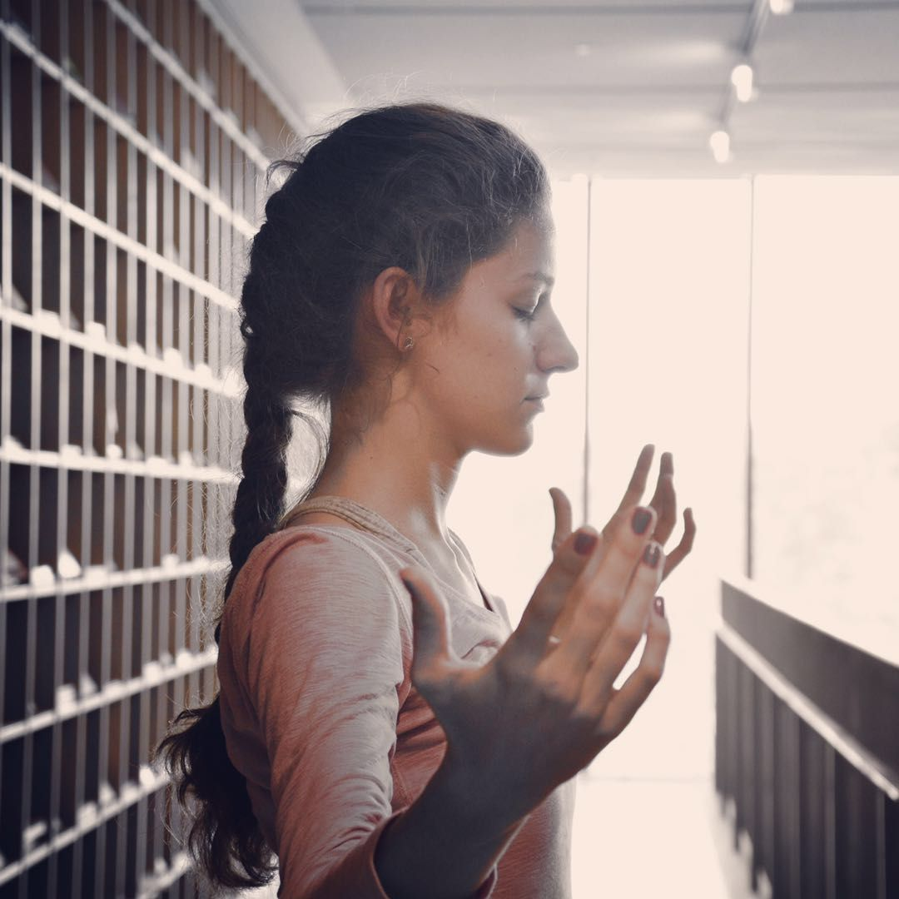
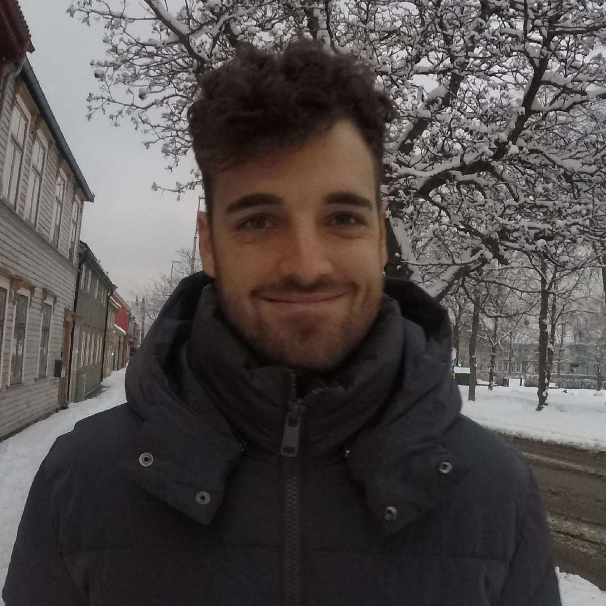

Reynard
Valentina Polcovnicova
Founder
Valentina Polcovnicova (born in Moldova, 1991) comes from a diverse
cultural background. Her
mother is a representative of a small Bulgarian minority community of Moldova, while her father
is Russian. From as early as childhood, Valentina has been exposed to a mixture of traditions and
got involved in folk dancing present in Moldova. During her university years in Moscow,
Valentina became interested in theater dance and visual art forms, both of which has become her
extra-curriculum activities.
Valentina obtained her MA in Linguistics and Translation Studies (RSUH, Moscow, Russia - 2013). Valentina also had the opportunity to complete a course on Anthropology and Modern Dance at Beloit College (WI, USA -2012) and a semester of Ethno-Cultural Diversity and Visual Arts in KU Leuven (Belgium – 2014). Those courses further developed her curiosity about cultures and a move to China allowed for more of the same.
Valentina lived and taught dance in Hangzhou, China, for three years. She became an active member of the Contemporary dance community there by staging performances and organizing workshops. At the same time, she learnt about Chinese arts and local practices, such as calligraphy and Qi dance.
All of Valentina’s travelling let to an increased fascination of cultural diversity, particularly dance practices that exist in the world. She decided to learn more about dance anthropology and cultural management and was accepted into the Choreomundus Master program in Dance Knowledge, Practice and Heritage. She is currently finishing her dissertation on contemporary dance festivals.
Valentina obtained her MA in Linguistics and Translation Studies (RSUH, Moscow, Russia - 2013). Valentina also had the opportunity to complete a course on Anthropology and Modern Dance at Beloit College (WI, USA -2012) and a semester of Ethno-Cultural Diversity and Visual Arts in KU Leuven (Belgium – 2014). Those courses further developed her curiosity about cultures and a move to China allowed for more of the same.
Valentina lived and taught dance in Hangzhou, China, for three years. She became an active member of the Contemporary dance community there by staging performances and organizing workshops. At the same time, she learnt about Chinese arts and local practices, such as calligraphy and Qi dance.
All of Valentina’s travelling let to an increased fascination of cultural diversity, particularly dance practices that exist in the world. She decided to learn more about dance anthropology and cultural management and was accepted into the Choreomundus Master program in Dance Knowledge, Practice and Heritage. She is currently finishing her dissertation on contemporary dance festivals.
Reynard
van den Berg
Developer
Rey comes from a scientific background with a formal education in Getics and Psychology with a year spent dabbling in Bioinformatics.
He has also plyed his trade as an English teacher abroad and loved being able to travel all over the world due to his abundance of free time.
Rey has a love of ice cream , dogs, and walks on the beach.
Currently, he's trying his hand at web development - this is his first project!
Good for you, Rey.
Rey has a love of ice cream , dogs, and walks on the beach.
Currently, he's trying his hand at web development - this is his first project!
Good for you, Rey.